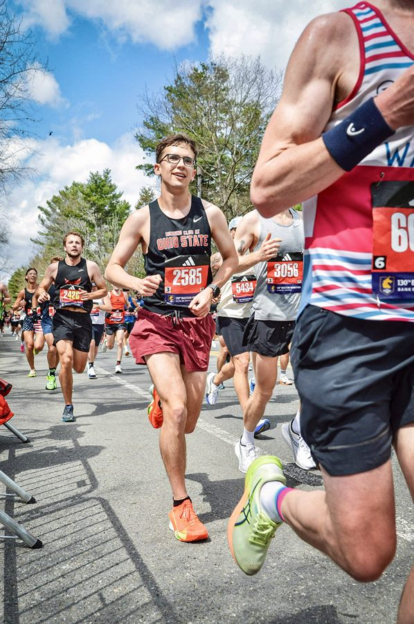
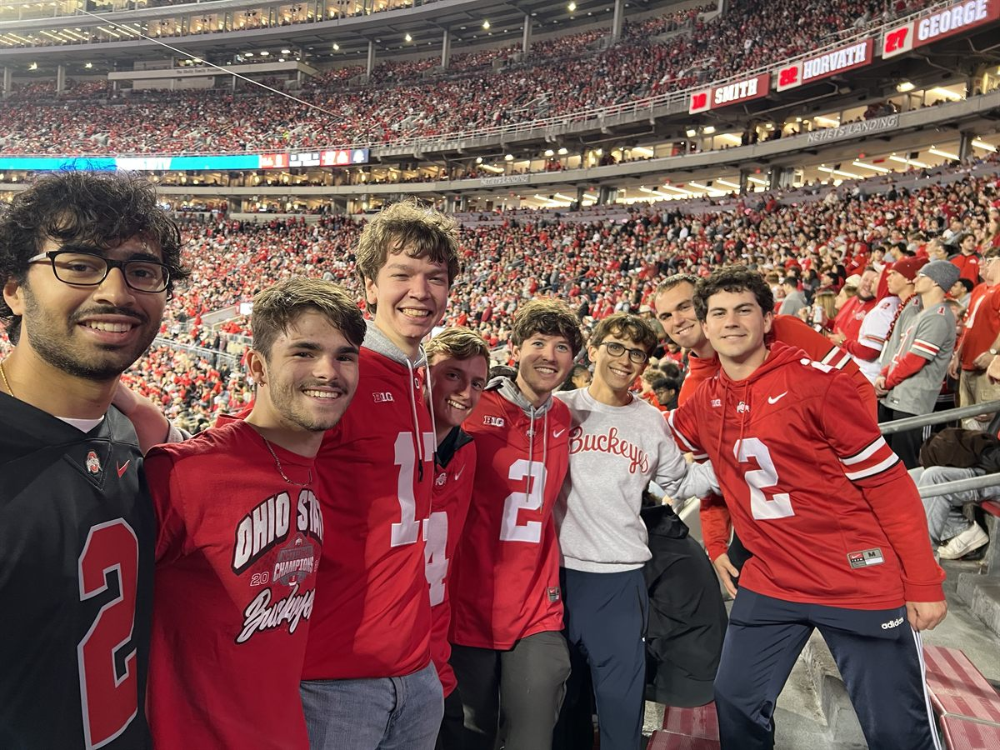
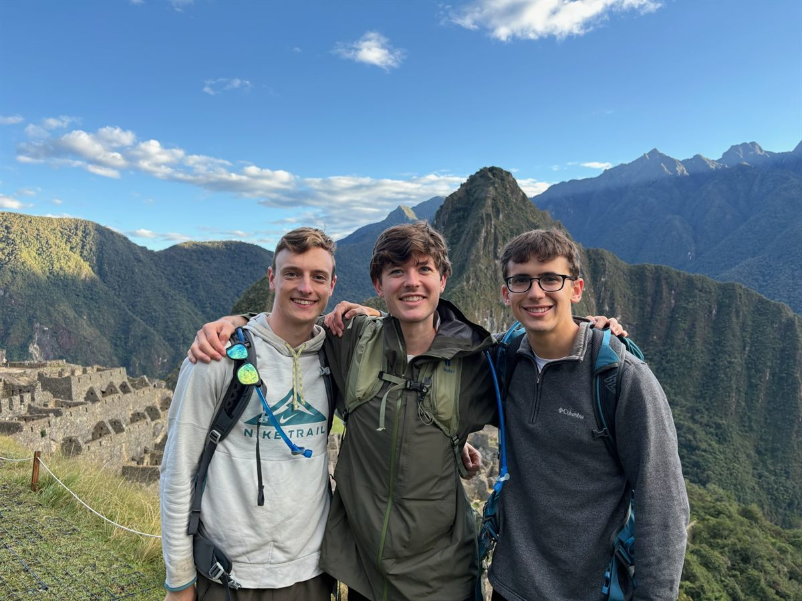
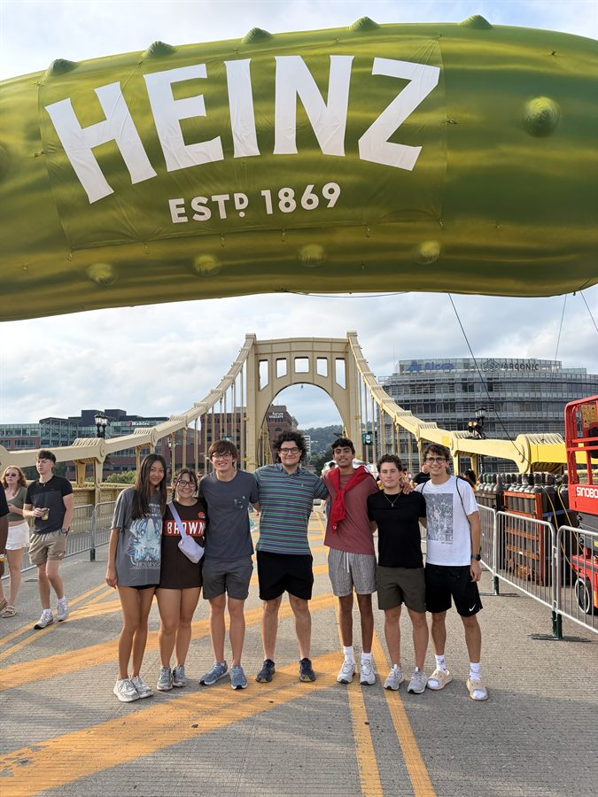
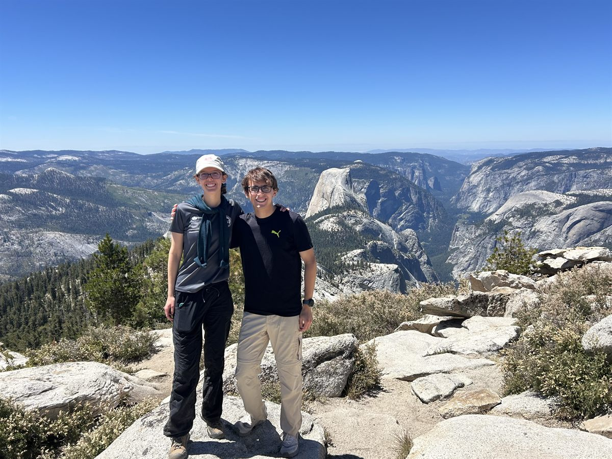
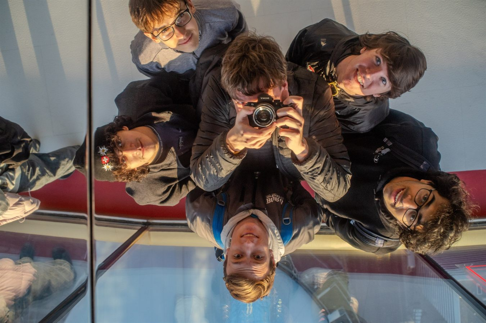
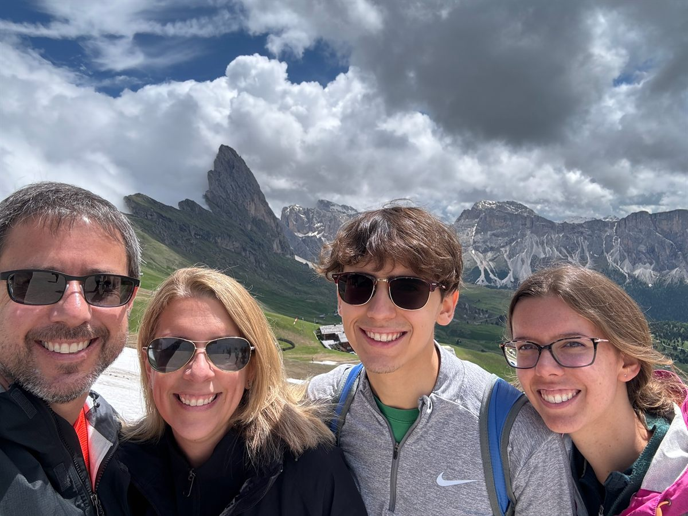
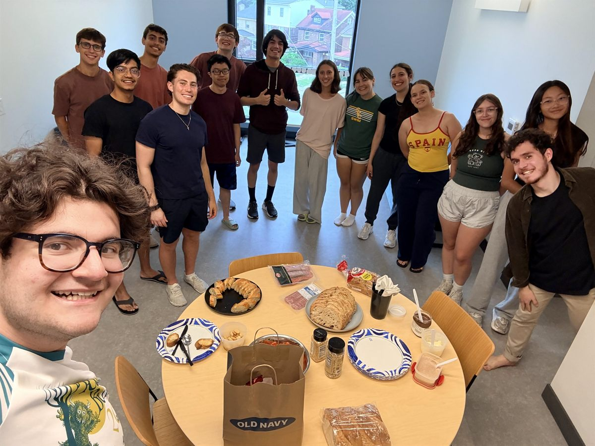

William Sorg
Statistics & mathematics at Ohio State. Mostly thinking about sports.1
Index of work
Roles
Now
- Senior, B.S. Statistics & Theoretical Mathematics
The Ohio State University - Applying to PhD programs
Fall 2027 entry
Before
- Ohio State Football — Analytics Intern, 2026
- Ohio State Athletics — Sports Intelligence & Strategy Intern, 2026
- Knowlton School of Architecture — Undergraduate Research Assistant, 2026
- OSU Sports Analytics Association — President, 2026
- Carnegie Mellon University— Undergraduate Researcher, 2026
- Ohio State Baseball — Data Analytics Intern, 2024-26
- Curriculum vitae (PDF)
Off the clock
01 / 08








Elsewhere, I run on Strava, watch on Letterboxd, eat on Beli, and post the rest on Instagram.